练习④ 出荷と請求（プロジェクト在庫 Q から売上へ）
.png 放进 assets/gui/ 后执行 python3 tools/swap_gui_images.py <site> --apply 即可一键替换。.1 に収益、.2 に原価。预计 60 分钟。在庫区分 Q
引当 1 式
Q 在庫 0
請求計画
WBS に収益/原価
全リンク
4-1 出荷伝票の登録（VL01N）
出荷タイプ : LF 出荷ポイント : 自動決定（プラント 1000 / 得意先 1000） 出荷先 : 得意先 1000 納入日付範囲 : 今日 ± 30 日（受注の納期を含む範囲） 参照 : 受注 000000xxxx（または VA03 → 明細 → 「出荷」） 数量 : 1 PC（受注残）
- （做法 A）
VA03→ 受注 → 明細 10 → 「明細」→「出荷」でその明細から出荷伝票を作る。 - （做法 B）
VL01N→ 出荷タイプLF・出荷ポイント・出荷先 1000・納入日付範囲 → 「納入日程行の選択」で受注0000…の納期行を选 → 数量1。 - 確認：明細の 在庫区分 = プロジェクト在庫（Q）・WBS
ZETO-1000.2・引当数量 1。← ここが「受注在庫 E」ではなく「Q」であることが ETO の証拠。 - 「保存」→ 出荷伝票番号を記録（状態 A）。
そもそも納期行が出ない → 受注明細の状態（完了）、納入日付範囲、明細の WBS。
Cloud で PGI が通らない既知事象 → SAP KBA 3623492（戦略グループ
E2・6GD の活性状況を確認）。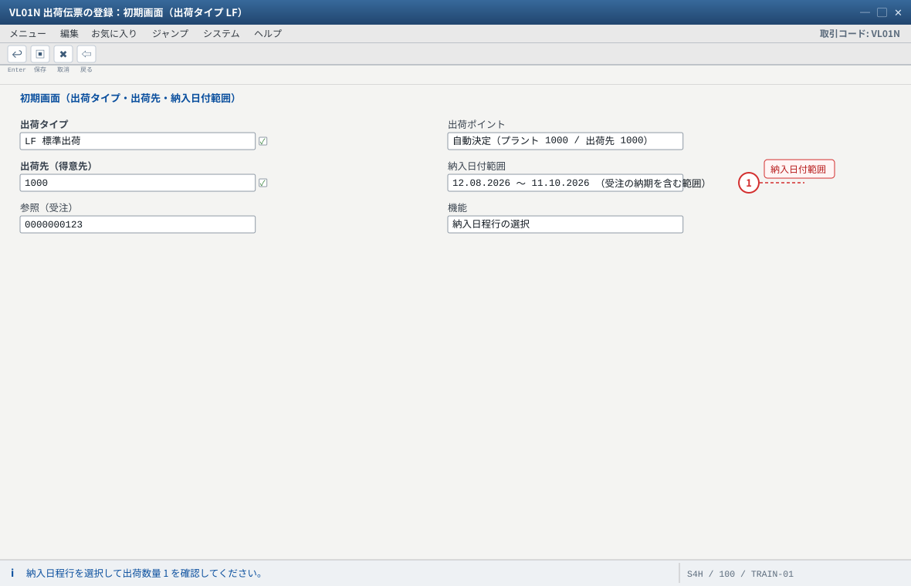
- 1 納入日付範囲が受注の納期を外すと納入日程行が出ない（範囲を広げて確認）
VA03 の明細から「明細 → 出荷」で作る方法もあります。引当が 0 のときはプロジェクト在庫 Q に数量が入っているか（練習③ の 101）を確認してください。
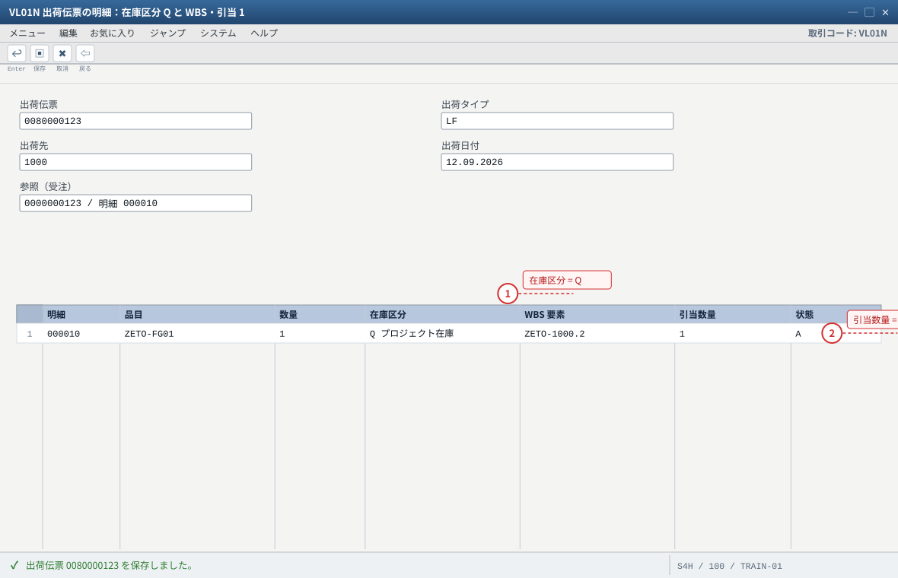
- 1 在庫区分が「受注在庫 E」ではなく「Q」であることが ETO の証拠
- 2 引当 1 が取れている＝プロジェクト在庫 Q に在庫がある。0 なら練習③ の 101 を疑う
Cloud で PGI が通らない既知事象があります。その場合は SAP KBA 3623492（戦略グループ E2・6GD の活性状況）を確認してください。
4-2 ピッキングと出庫確認（VL02N）
VL02N→ 出荷伝票 → 明細の「ピッキング数量」に1を入力 → Enter（引当済/完全引当）。- 明細で 在庫区分 Q・WBS を再確認 → 「保存」（状態 B）。
- メニュー「出荷伝票」→「出庫確認（PGI）」→ 転記。記録：物料伝票番号・会計伝票番号。
- 確認：
MMBE→ 品目ZETO-FG01のプロジェクト在庫 Q が 0 になる（納品された）。 - 確認：
SE16N: MATDOCに移動タイプ601・特別在庫Q・WBS 付きの明細。 - 確認：
FB03で会計伝票（在庫/売上原価側の動き。評価付プロジェクト在庫なら金額も動く）。
VL09。請求まで作ってしまったら先に VF11 で請求を取消（逆順厳守）。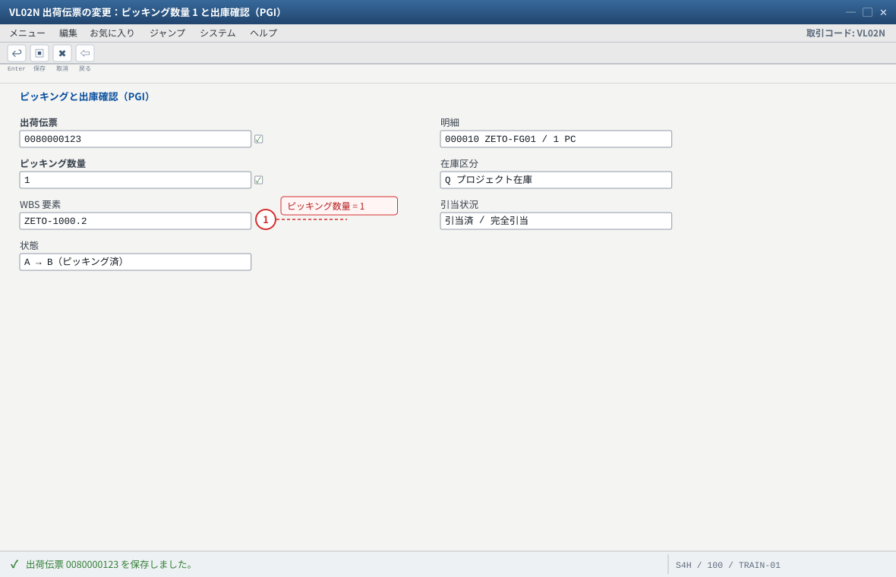
- 1 PGI（出庫確認）は「出荷伝票 → 出庫確認」から実行する。在庫区分 Q からの出庫になる
取消は VL09（出庫確認の取消）。請求まで作ってしまった場合は、先に VF11 で請求を取り消します（逆順厳守）。
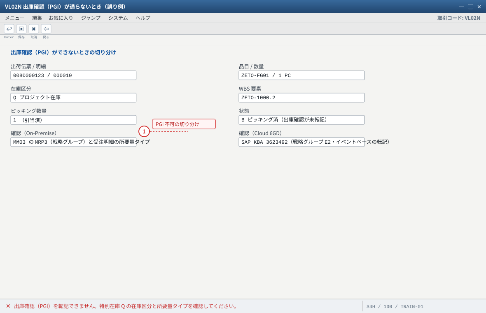
- 1 Cloud の 6GD（戦略グループ E2）ではプロジェクト在庫 Q の出荷で PGI できない既知事象がある（KBA 3623492）
On-Premise では MM03 の MRP3・受注明細の所要量タイプ・在庫区分（Q）を順に確認します。Cloud はスコープアイテム（6GD）の活性状況と Test Script を優先してください。
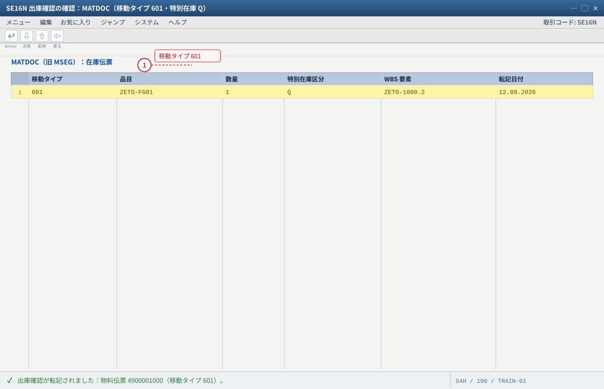
- 1 601 が出庫確認。MMBE ではプロジェクト在庫 Q が 0 になります（納品された）
会計伝票は FB03 で確認します（在庫 → 売上原価）。評価付プロジェクト在庫なら金額も同時に動きます。
4-3 請求（VF01：請求計画/出来高）
請求タイプ : F2
参照 : 出荷伝票 008000xxxx（出荷ベース）または 請求計画の日付（分割請求）
請求金額 : 出荷ベースなら 5,000,000 JPY（1 式）
請求計画なら該当行（例：契約時 30% = 1,500,000 JPY）
※ 請求計画の日付に無い請求はエラーになる（KBA 2763512）
VF01→ 請求タイプF2→ 出荷伝票番号（または納入日付範囲）→ Enter → 請求対象を確認 → 「保存」→ 請求伝票番号を記録。VF03→ 請求伝票 → 「条件」タブで金額、請求計画のどの行で請求したかを確認。- 会計伝票（
VF03の会計伝票ボタン /FB03）で「売掛金 / 売上」を確認。 - （分割請求を練習する場合）
VF01を請求計画の日付順に 2 回実行し、1 回目は 30%、2 回目は 70% になることを確認する。
CN25 など）→ 請求可能になる流れを実機で確認してください（练习⑤ の発展）。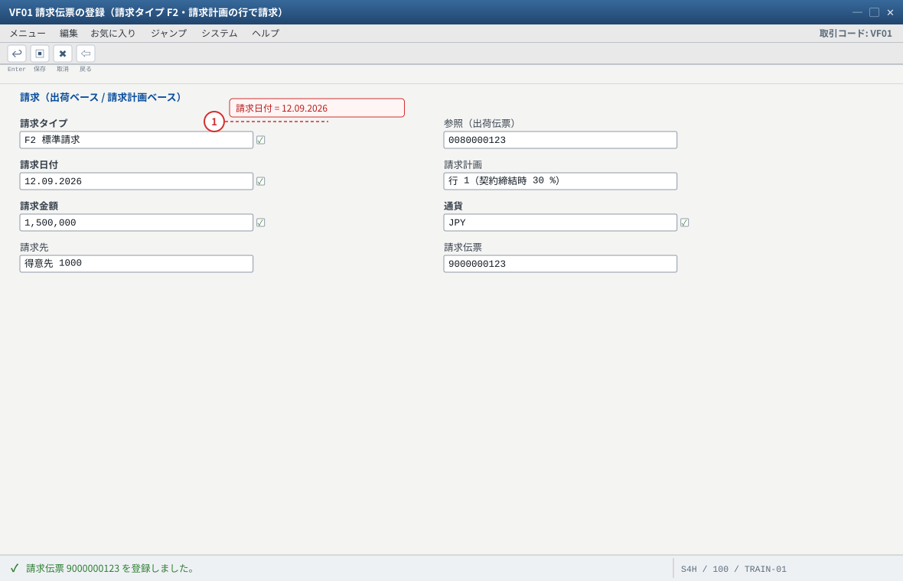
- 1 請求日付が請求計画の行にあることが条件（無い日付は KBA 2763512 のエラー）
分割請求を練習する場合は、請求計画の日付順に VF01 を 2 回実行します（1 回目 30% / 2 回目 70%）。
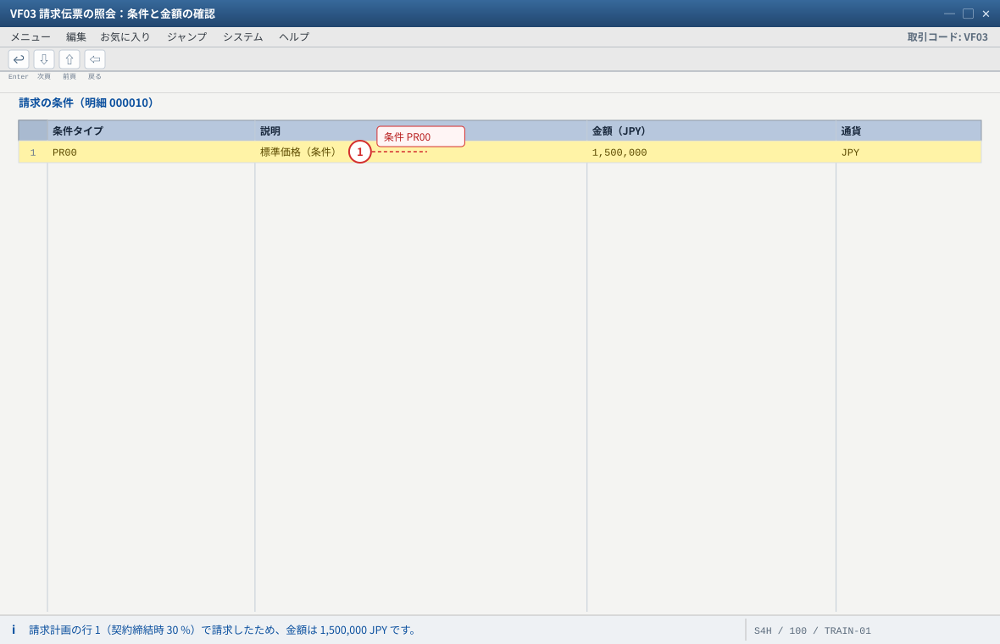
- 1 金額が 0 のときは条件 PR00 の有無・有効期間を VK13 で確認する（FV11 で取消 → 再作成）
会計伝票は VF03 の会計伝票ボタンまたは FB03 で確認します（売掛金 / 売上）。
4-4 WBS に売上と原価が集まったか（CJI3）——ETO の「答え合わせ」
CJI3（実績原価/収益）→ プロジェクトZETO-1000/ 対象期間（今日〜+180 日）→ 実行。- 对照下表：
| WBS | 期待される表示 | 意味 |
|---|---|---|
.1 設計・調達（請求要素） | 収益（請求額）が出ている | 請求が WBS に帰属した証拠。ここが空なら請求要素が正しくない |
.2 製造（勘定設定要素） | 原価（材料費・労務費・外注費）が出ている | 指図・発注の勘定設定が WBS に乗っている証拠 |
- （ならし）「決済前」の段階では、指図の原価がまだ完全に WBS へ確定していないことがあります。練習⑤ の
CJ88（決済）実行後に、もう一度CJI3を見て変化を確認してください。これが ETO の「月末処理の意味」です。 CJ31（予算）→ 使用額（実績＋コミット）が 予算内か、可用性管理の警告が出ていないかを確認。
.1、原価は WBS .2」——この 2 行が出れば、SD・PS・CO 的链路全都通了。
出ない場合は、収益＝請求要素（.1 のフラグと受注明細の WBS）、原価＝勘定設定（指図/発注の WBS）を切り分ける。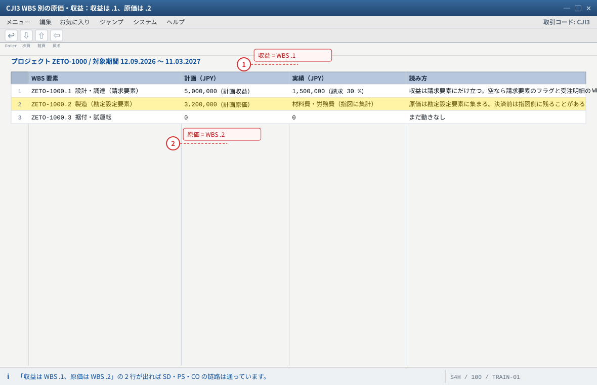
- 1 収益が出ないときの第一嫌疑は「請求要素ではない WBS に請求が載っている」ことと受注明細の WBS
- 2 原価が出ないときの第一嫌疑は指図・発注の勘定設定（CO03 / ME23N）
自システムでの確認：実績の費目（材料費・労務費・外注費・諸経費）は原価要素の設定と評価額で変わります。「決済前」は指図の原価がまだ WBS へ確定していないことがあります（練習⑤ の CJ88 の後にもう一度見る）。
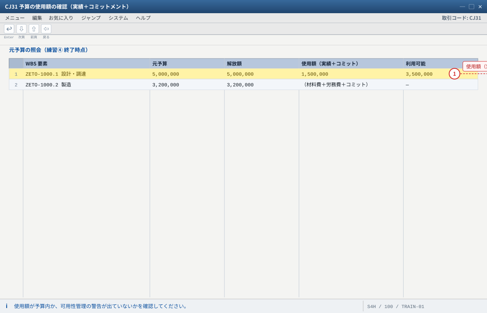
- 1 在庫・消費・請求が動くほど使用額が増える。可用性管理の警告はここが根拠になる
金額は在庫評価額・作業時間レート・決済のタイミングで変わります。「予算内かどうか」と「警告が出ていないか」の 2 点を確認できれば十分です。
4-5 伝票フローで全リンクを確認（VA03 / VBFA）
VA03→ 受注 → メニュー「環境」→「伝票フロー」。
表示例：受注 → 製造指図 → 入庫（物料伝票）→ 出荷 → 出庫確認（物料伝票）→ 請求SE16N: VBFAで受注番号を入力し、後続伝票のつながりを表でも確認。CJ20N/CJ03でプロジェクトを開き、WBS に「受注」「指図」「在庫」「請求」がぶら下がっているかをプロジェクトのビュー（オブジェクト概要・実績/決済）で確認する。
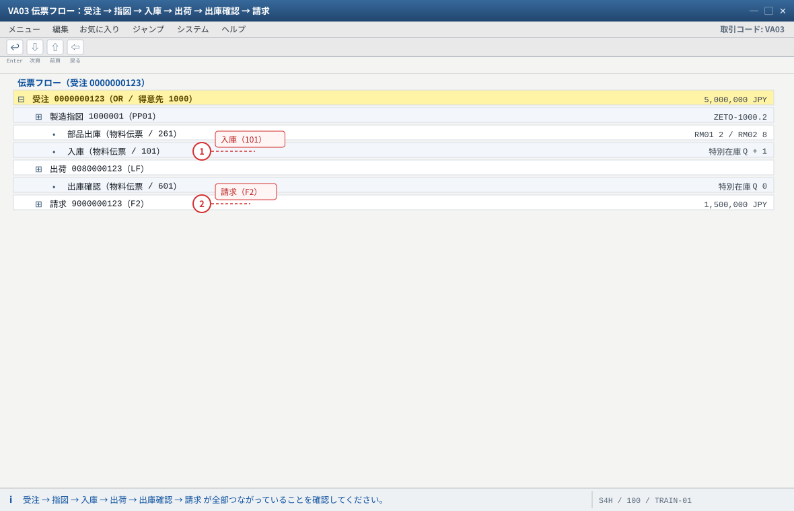
- 1 在庫の動き（261 / 101 / 601）がすべて指図と特別在庫 Q に紐づいていることが読み取れる
- 2 請求は受注（明細 000010 の WBS）に帰属し、収益が WBS .1 に立つ
プロジェクト側から確認するなら CJ20N / CJ03 でプロジェクトを開き、WBS に「受注・指図・在庫・請求」がぶら下がっているかをオブジェクト概要や実績 / 決済のビューで見ます。
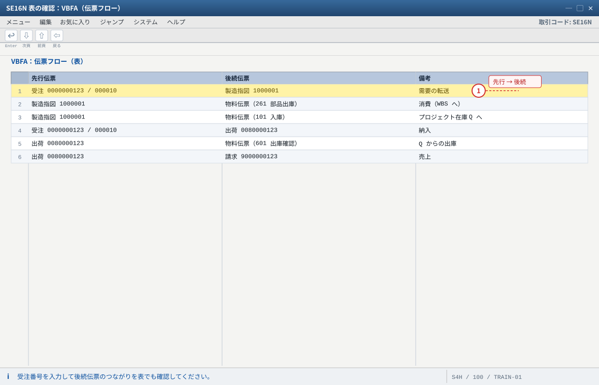
- 1 画面（VA03 の伝票フロー）と表（VBFA）の両方で確認するのが実務の型
自システムでの確認：VBFA の項目は先行伝票（VBELV / VBTYP_V）と後続伝票（VBELN / VBTYP_N）です。列見出しは画面の並びに合わせています。
期待结果汇总（本练习做完）
| # | 确认项目 | 期待值 | 确认方法 |
|---|---|---|---|
| 1 | 出荷伝票 | 1 件・在庫区分 Q・WBS 付き・状態 C | VL03N |
| 2 | プロジェクト在庫 Q | 1 → 0 | MMBE/MB52 |
| 3 | 在庫伝票 | 601・特別在庫 Q・数量 1 | MATDOC（/ MSEG） |
| 4 | 請求 | 請求伝票あり（出荷ベース or 請求計画の該当行） | VF03 |
| 5 | 会計伝票 | 出庫：在庫→売上原価／請求：売掛金→売上 | FB03 |
| 6 | WBS の実績 | .1 に収益・.2 に原価 | CJI3 |
| 7 | 伝票フロー | 受注→指図→入庫→出荷→出庫確認→請求 | VA03 環境→伝票フロー／VBFA |
つまずきと対処（本练习版）
| 症状 | 最可能的根因 | 确认 / 対処 |
|---|---|---|
| VL01N に出荷対象が出ない | 受注明細が完了・納入日付範囲外・納入ブロック | VA03 明細状態と納期行の納入日、範囲を広げる |
| 引当 0（在庫が無い） | プロジェクト在庫に入庫されていない | MMBE で Q を確認 → 练习③ の 101 を再実施 |
| PGI でエラー（特別在庫 Q） | 戦略グループ/在庫区分の不整合、Cloud の既知事象 | On-Premise：MM03 MRP3・受注明細の所要量タイプを確認。Cloud：KBA 3623492（6GD・E2） |
| 請求できない（請求計画エラー） | 請求計画の日付/金額、明細カテゴリの請求関連 | VA03 請求計画を確認。KBA 2763512 が典型事例 |
| 請求金額 0 | 条件 PR00 無し/有効期間外 | VK13 → VF02 で再決定（必要なら VF11 取消して再作成） |
| CJI3 に収益が出ない | 受注明細の WBS が請求要素でない | CJ20N の WBS フラグと VA03 明細の WBS を確認 |
| CJI3 に原価が出ない | 指図/発注の勘定設定が WBS でない | CO03 の勘定設定、ME23N の勘定設定を確認 |
| 取消ができない | 後続伝票が存在 | 逆順：請求 VF11 → PGI VL09 → 入庫 MIGO取消/MBST → 実績 CO13 |
验收（完成基准）
VL01Nで受注から出荷伝票を作成し、在庫区分が Q・WBS 付きであることを確認した。VL02Nでピッキング 1 を入力し、出庫確認（601）を実行して プロジェクト在庫 Q が 0 になった。VF01で請求を作成し（出荷ベースまたは請求計画）、VF03で金額と条件を確認した。FB03で出庫・請求の会計伝票の借貸方向を説明できる。CJI3で WBS.1に収益・.2に原価が出ていることを確認した。VA03の伝票フローで 受注→指図→入庫→出荷→出庫確認→請求 が全部つながっている。
CJI3 の収益が 2 回に分けて立つことを確認。② 出来高請求：ネットワーク活動にマイルストーンを付け、達成→請求の流れを試す。
③ 部分納入：受注数量を 2 式に変更（
VA02）し、1 式だけ先に納入・請求する（残りのプロジェクト在庫と WBS の見え方を確認）。